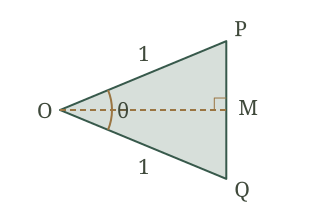

1. 填空
$\displaystyle 180^\circ=$弧度$\displaystyle 90^\circ=$弧度$\displaystyle 60^\circ=$弧度$\displaystyle 45^\circ=$弧度$\displaystyle 30^\circ=$弧度
2. 补全三角函数值表。
| 角 | $\displaystyle 0$ | $\displaystyle \dfrac{\pi}{6}$ | $\displaystyle \dfrac{\pi}{4}$ | $\displaystyle \dfrac{\pi}{3}$ | $\displaystyle \dfrac{\pi}{2}$ |
|---|---|---|---|---|---|
| sin | |||||
| cos |
3. 单位圆内接正 $\displaystyle n$ 边形分成 $\displaystyle n$ 个等腰三角形，每块的顶角为。
4. 连接圆心 $\displaystyle O$ 与相邻顶点 $\displaystyle P,Q$，向底边作高
半顶角为；半条底边为
高为；一块三角形的面积为

5. 设 $\displaystyle D=\{3,4,5,\ldots\}$，$\displaystyle A_4=2$。在空白处填入 $\displaystyle \in$ 或 $\displaystyle \notin$
$\displaystyle 3$ $\displaystyle D$$\displaystyle 2$ $\displaystyle D$$\displaystyle 3.5$ $\displaystyle D$$\displaystyle A_4$ $\displaystyle \mathbb{R}$
6. $\displaystyle g(x)=x^2$，填写下表。
| x | −2 | −1 | 0 | 1 | 2 |
|---|---|---|---|---|---|
| g(x) |
7. 在左图画出 $\displaystyle y=2x+1$，在右图画出 $\displaystyle y=x^2$，每小格取1个单位。
两图中 $\displaystyle x=0$ 对应的点分别为、。抛物线应画成（填“平滑曲线”或“折线”）。